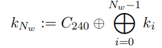

Алгоритм шифрования:
Размер блока в ThreeFish может быть равно 256, 512 или 1024 бит. Tweak-значение всегда имеет размер 128 бит.
Tweak-значение играет роль дополнительного ключа, который влияет на процесс шифрования.
Определим функцию шифрования E(K, T, P), которая принимает на вход следующие аргументы:
• K - ключ; строка из 32, 64 или 128 байт (256, 512 или 1024 бит).
• T - tweak-значение, строка из 16 байт (128 бит).
• P - открытый текст; строка, длина которой равна ключу.
Для обработки блока данные представляются в виде массива 64-битных слов
(целых чисел от 0 до \(\ 2^{64}\)-1) . Определим \(N_{w}\) как число
64-битных слов в ключе(и, соответственно, открытом тексте) тогда:
К будет интерпретироваться как ключевые слова
(\(k_{0},\ k_{1},\ ...\ ,\ k_{N_{w} - 1}\))
T будет интерпретироваться как два слова (\(t_{1},t_{2}\))
P как (\(p_{0},p_{1},\ ...\ ,p_{N_{w} - 1}\ \ \))
Количество раундов, \(N_{r}\) для алгоритма Threefish определяется
следующим образом:
Алгоритм использует \(N_{r}/4\)+1 раундовых ключей.
Дополним основной ключ и tweak-значение двумя 64-битными словами:

Где константа \(C_{240}\)= 0x1BD11BDAA9FC1A22.
Определим подключ s как \((k_{s,0},\ k_{s,1},\ ...\ ,\ k_{s,\ N_{w} - 1})\).
Где \(k_{s,i}\) определены как:
Все операции выполняются по модулю \(2^{64}\).
Обозначим \(v_{i,d}\) i-го слова состояния шифрования после \(d\) = 0,
1, \ldots{} , \(N_{r} - 1\ \) раундов. Начальное внутреннее состояние:
\({v_{0,i}}^{}: = p_{i}\ для\ i\ = \ 0,\ ...\ ,N_{w} - 1\ \)
Каждый раунд состоит из нескольких этапов. На первом этапе раунда к
внутреннему состоянию добавляется раундовый ключ \(k_{s,i}\) как указано
ниже:
На следующем этапе используется функция \(MIX_{d,\ j}\), которая
принимает на вход два аргумента (\(x_{0},\ x_{1}\)) и возвращает
(\(y_{0},\ y_{1}\)):
где <<< - оператор побитового сдвига влево, а
константа \(R_{d,j}\) определяется по таблице:
\((f_{d,2j},\ f_{d,2j + 1)}\ = \ MIX_{d,\ j}(e_{d,2j},\ e_{d,\ 2j + 1})\),
для j=0, 1, ... , \(N_{w}/2\ - 1\)
Следующее внутреннее состояние определяется как:
Функция перестановки π(i) представлена ниже:
Итоговый шифртекст С: